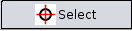
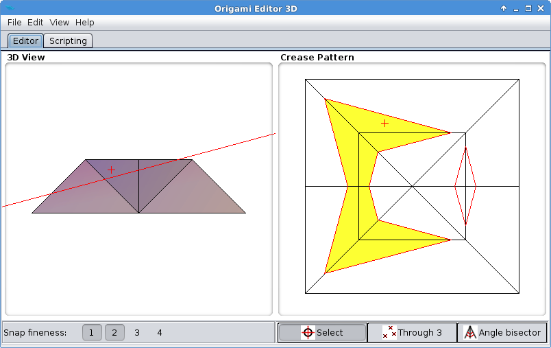
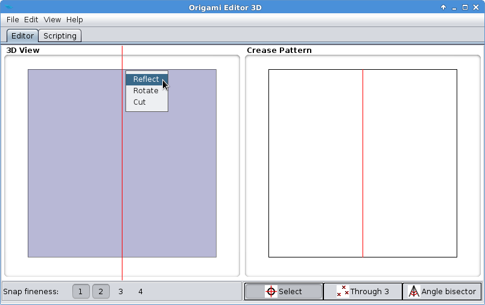
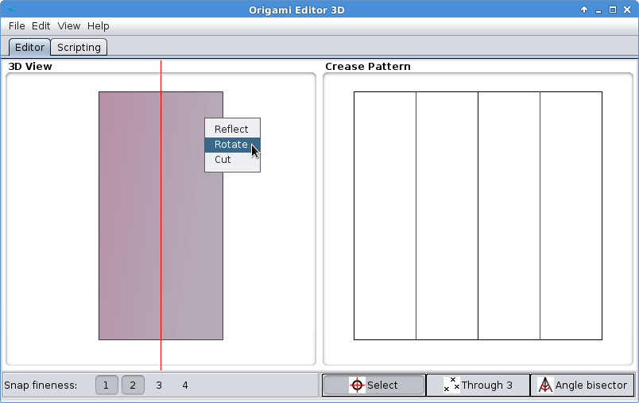
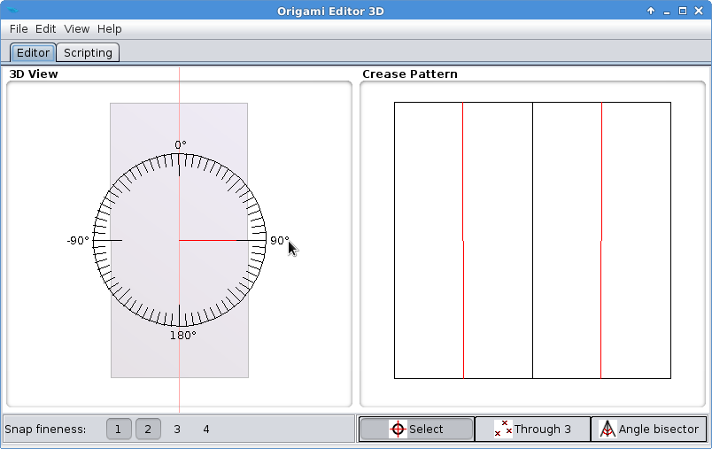
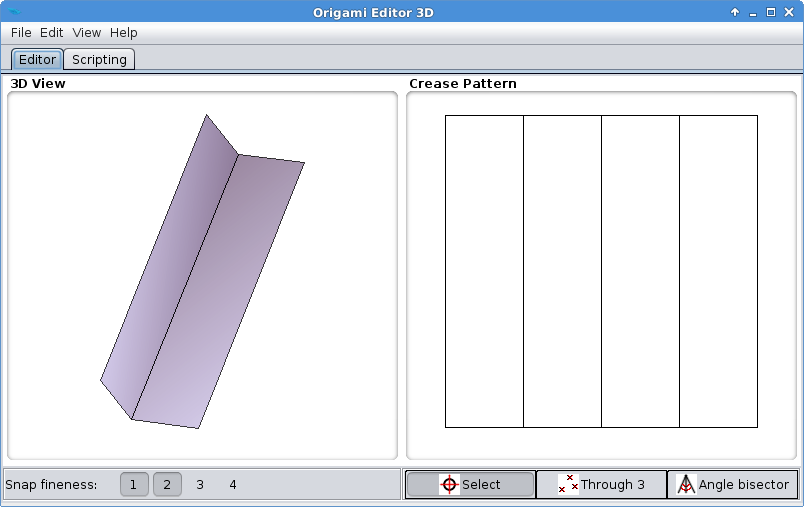
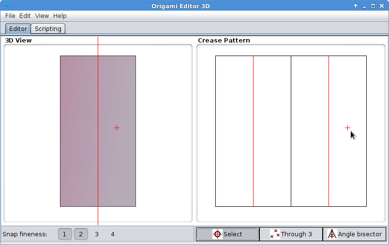
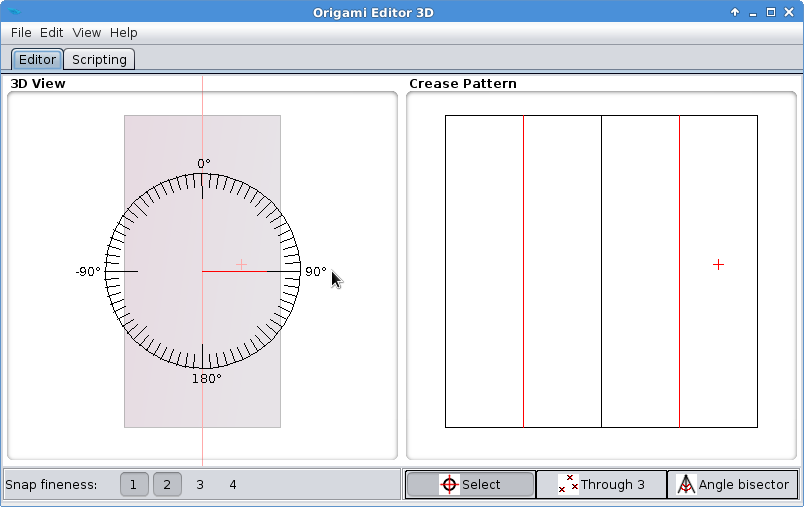
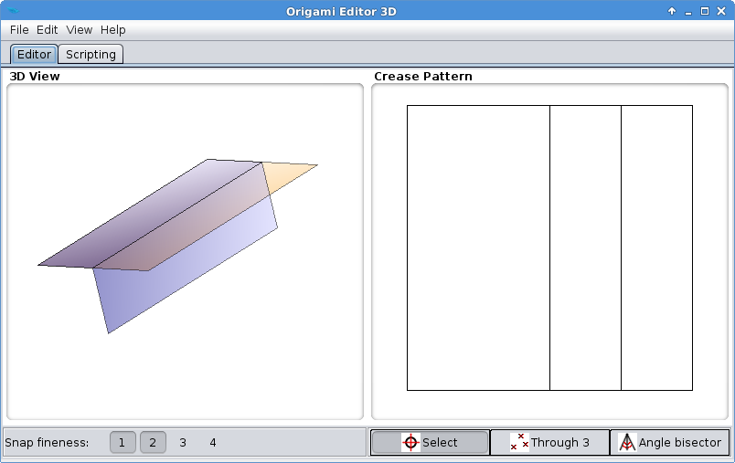

Selection Mode
Selection Mode is a device that modifies the behavior of Rotation Tool, Reflection Tool and Cutting Tool, by restricting these operations to a small part of the origami. It can be used for separating one layer of paper from the rest, and folding only that layer.
Selection Mode can be activated by clicking the  button (if it isn't switched on yet) and then clicking somewhere in the Crease Pattern. The point you clicked on will be indicated by a small red cross on the paper that also appears in the 3D View.
When you use the Ruler in Selection Mode, the next fold will be restricted to the area that contains the red cross and is bounded by the red lines in the Crease Pattern. For example, in the picture below, this area is marked with yellow:

Exercise
This exercise will demonstrate the difference between a normal fold and a fold made with the Selection Tool.
- Go to File > New > Square origami to start with a fresh piece of paper.
- Fold the paper in half using Reflection Fold (or a 180° Rotation Fold).

- Fold the paper in half again, but this time, with only a 90° Rotation Fold:


- As you can see, Rotation Fold has folded both layers of the paper by 90°. This is how an unrestricted Rotation Fold works.

- Click Edit > Undo, and left click on the 3D View three times to return to front view. Place the Ruler the same way as in Step 3, but this time, do not click on the popup menu. Instead, go over to the Crease Pattern, and select a point at the right end of the paper:

The little red cross indicates that Selection Mode is active and the next folding action will be restricted to the area containing the red cross and bounded by the red line.
- Now right click on the 3D View, select Rotate, and set the angle to 90°.

- This time, Rotation Tool has folded only one layer of the paper.
